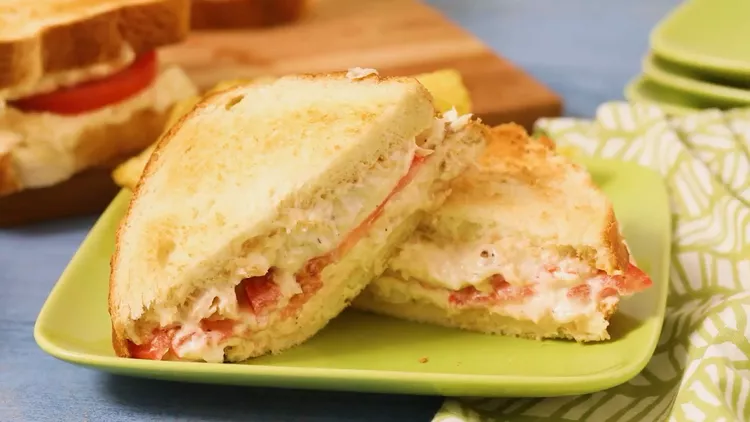

Cheesy Tuna Melt

Description
Put a crunchy, cheesy spin on the classic tuna sandwich with a few simple steps. Serves eight people.
Ingredients
- 1 loaf of your preferred bread
- 1 small sweet onion, peeled and diced
- 1 (12 oz) can of tuna, drained
- 2 cups mozzarella cheese, shredded
- 1 cup mayonnaise
Steps
- Preheat oven to 350 degrees F (175 degrees C).
- In a mixing bowl, combine sweet onion, drained tuna, mozzarella, and mayonnaise. Mix thoroughly.
- Spread tuna mixture on slices of bread to form a sandwich. Place sandwiches on a cookie sheet.
- Bake in a preheated oven for 10 minutes.